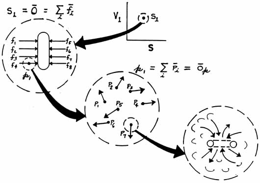

SLIDE 8.
SCALAR AND VECTOR SUBSTRUCTURES

| Now
let us see if we can do some unusual thinking about the hidden vector
substructure of a scalar or zero-vector. On the leftmost figure in this slide, we show a plate with balanced opposing forces. The vector summation of all the forces' is zero, so the system has no resultant vector. The plate therefore does not move. However, the plate -- that is, the medium in which the forces act -- is stressed, much like the previous example of pressure in a gas. The difference is that now the stress is patterned in its substructure, and not random. Now suppose we rhythmically vary the forces, each the same, in a regular manner in time. Yet we maintain a continuous balance, so there is never a system resultant greater than zero. In this case, we maintain our vector zero, but we are producing regular stress waves in the plate medium.. I think you now can see that I can vary the individual opposing vector pairs so that rhythmic waves flow from top to bottom, or from bottom to top. That, of course, will describe a vector gradient traveling through the medium, and that will be an ordinary "vector wave." Is there any way I can make waves through the medium, and not have such vector waves ever appear? Indeed there is, if I look further into the substructure. Take one point on one of the vectors shown acting on the plate in the left diagram. That point is a scalar, and it also has a substructure of even finer vectors, as shown in the lower middle figure. And any point in one of these second-order hidden vectors is a scalar and composed of a still finer hidden vector substructure, as shown in the lower right figure. This process repeats ad infinitum, and all is structures within structures. At least it can be modeled that way, for it already is treated that way in particle physics. Now go back to the second order vector substructure. Here I can establish whatever patterns I wish, and not affect the first order pattern shown in the figure on the left. I can even rhythmically vary things in the second order substructure, and leave a blissfully unchanged first order substructure, to the first order observer. So I can make as many waves; as I wish through the medium, as long as I stay second order or higher, and the external observer will never see any change at all unless he has a special detector of some sort to detect the lower substructure changes. As I showed in the Appendix to my book, The Excalibur Briefing, these substructures are in reality the same thing as hyperspaces. And movements in them can proceed much faster than the speed of light. So I can have higher order signals and waves through the stressed medium without changing the overall first order stress in the medium. This is a sort of super-relativity; the present relativity is just a special case. Superluminal communication systems are perfectly possible, but not with the present first order transmitters and receiver/detectors. Note also that higher order stresses -- stresses in the higher order substructures -- represent special stresses in time, and time has an internal stress-pattern substructure. The higher order stress waves are phase waves or phase fluctuations in that respect. Also note that Charles Musés has already created the hypernumber mathematics of the structure of time, and it is largely in his mathematics that these concepts will have to be mathematically modeled. |